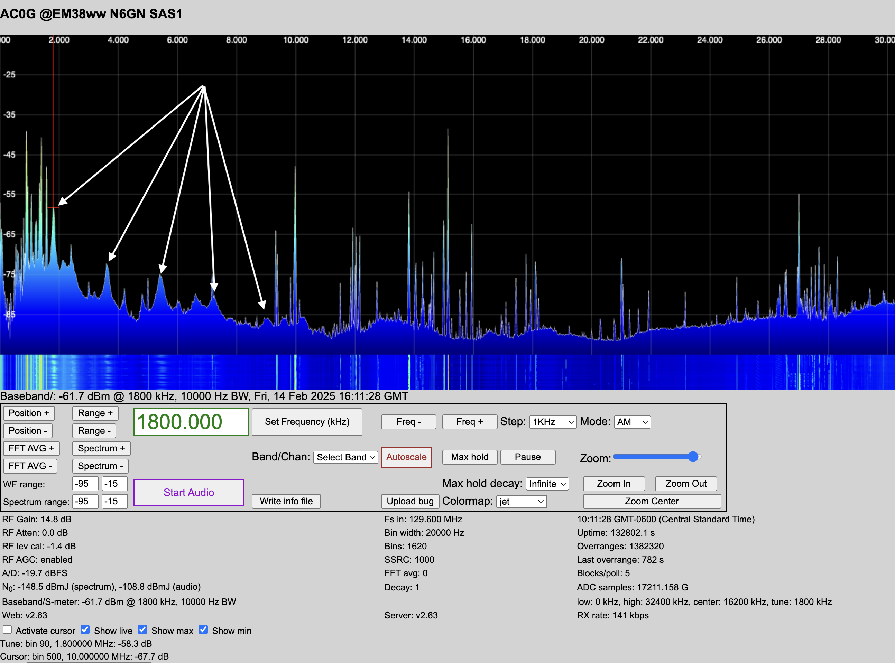
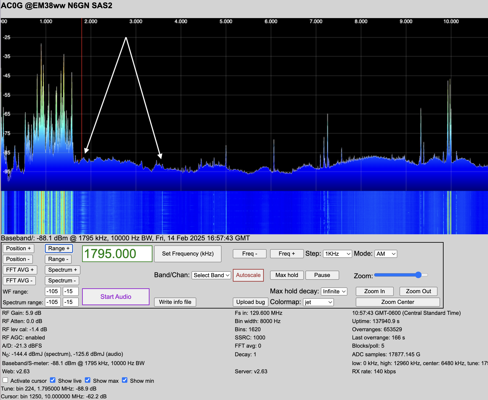

Case Study 4: Repeating Spectral Humps at 1.8MHz Intervals
Symptom:
Wavy noise peaks appear every 1.8 MHz, gradually decreasing in amplitude up to 9 MHz.

The pattern also appears on another antenna/receive system at the same site.

Analysis:
This pattern suggests harmonics of a switching power supply.
Many cheap wall warts, LED drivers, and computer chargers generate harmonic noise.
Mitigation Steps:
Identify the Device:
Unplug switching power supplies one at a time and observe changes in the waterfall.
Replace or Shield:
If a device is the culprit, swap it for a linear power supply.
If replacement isn’t possible, add ferrite chokes (Mix 43 for VHF, Mix 31 for HF) to the DC output.
Filter the Power Line:
Use an AC line filter to block conducted emissions.